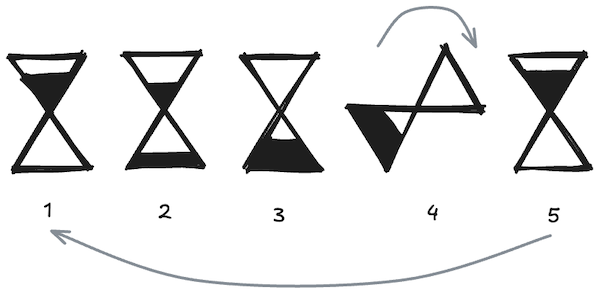

There's been a lot of excitement lately about the coding capabilities of modern Large Language Models (LLMs), so I figured it's high time I checked them out for myself. Will lead to replacement of engeeneers anytime soon? Maybe, maybe not—but either way, I'm curious to explore what these tools can offer right now.
Web technologies seem like the obvious choice to start with, and here's why:
First things first — I needed a suitable project. A "Hello World" is way too simple, and something like a personal finance tool feels too ambitious for a first AI project. I settled on creating an hourglass animation. Here's my thinking:
Also, I wanted all the code to come directly from the LLM. My role was limited to guidance, providing comments, and combining the pieces at the end.
I started by sketching out a simple hourglass — not exactly groundbreaking, but if I'm playing the role of project manager, let’s commit fully. A simple drawing often communicates ideas better than words alone.
Next up, I outlined the animation steps. Instead of describing them myself, I drew each step and asked ChatGPT to describe what it saw. Once it did, I combined everything into a single prompt.
Initially, I told ChatGPT explicitly to use HTML, CSS, and JavaScript. The first CSS animation attempt wasn't terrible — the duration and colors were surprisingly good—but the sand kept spilling outside the glass. Explaining this to the AI turned out to be tricky.
Here is the first result that I got:
Animation duration is correct - indeed there are 5 seconds of animation. Colors are resemblig my "design", not exactly, but they are very close and quite pleasent
Obviously sand is "spilling" outside the glass. This maybe a problem to explain, but I will try my best.
Next attempts to make css work were almost as remarkable as the first one.
Further attempts with CSS were similarly challenging, confirming my suspicion that CSS is not exactly an LLM strength right now. So, I pivoted and explicitly asked it to use JavaScript with a canvas.
This approach was much better—timing and smoothness improved significantly. Physics still needed tweaking, but overall, it seemed we were close to a solid solution.
Explaining the physics and adjusting the canvas size were the final steps to keep things tidy:
The result was decent, although it took longer than I’d hoped — but honestly, I wasn't sure what to expect in terms of speed.
All the above experiments used the GPT-4o model. With an improved prompt ready, I gave the Deep Research option a shot. Interestingly, this model even asked for clarification about using my sketch, something none of the other models did—very impressive! I told it to generate similar graphics.
Here's the final canvas generated by that attempt:
This one is the closest to my original sketch — quite impressive. But there's a caveat: it took ChatGPT 18 minutes to generate. A lot of research was poured into this one.
Here's the full refined prompt:
I want to create an hourglass animation for my website. Use the attached image as reference for design. Animation should be developed using canvas and javascript. You can use 3rd party libraries if you need. Animation should start immediately after the page is loaded. It should be infinite. Duration of one cycle of animation is 5 seconds.
Here are detailed steps of the animation:
The animation loops seamlessly from step 5 back to step 1, creating a continuous cycle. Ensure the transition between sand transferring and rotation (step 3 to step 4 and step 4 to step 5) is smooth and visually intuitive.
Width of the canvas should be enough to see the whole hourglass while it's rotating. Hourglass shouldn't be cut by the frame.
The resulting canvas should be 180 pixels high.
Results can vary due to the random nature of AI outputs, making consistency a bit elusive. We're definitely not yet at a point of just "tell it what you want and relax." It helps to understand the code so you can adjust as needed.
Sometimes it feels like getting good results is more luck than skill — you never quite know when you'll get what you want or how many attempts it'll take.
I'll keep digging into this and next time I'll compare this prompt with other models. Stay tuned!
Side Notes
ChatGPT had trouble updating HTML, often escaping quotes unnecessarily:
<body>
<div class=\"hourglass\">
<div class=\"glass top\"></div>
<div class=\"glass bottom\"></div>
</div>
</body>
Explicitly instructing it not to escape quotes in HTML resolved the issue.
What about tests?
As for automated tests, the initial results were problematic and would require more in-depth investigation, so I decided to revisit testing later.